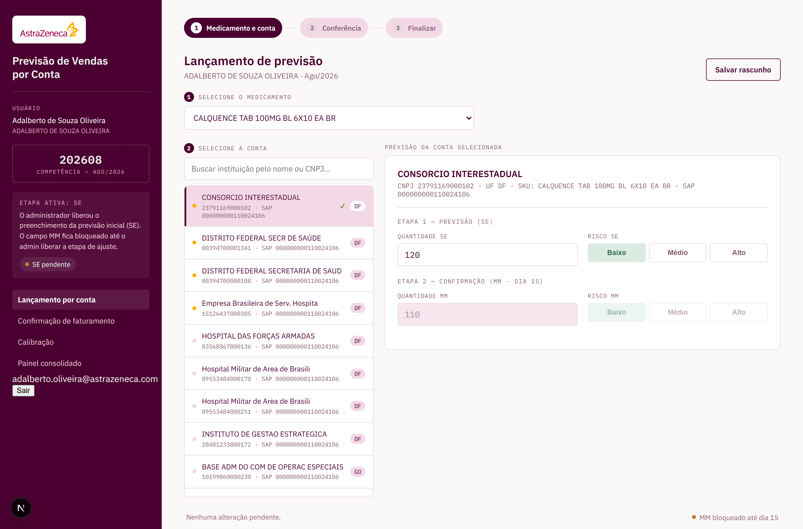
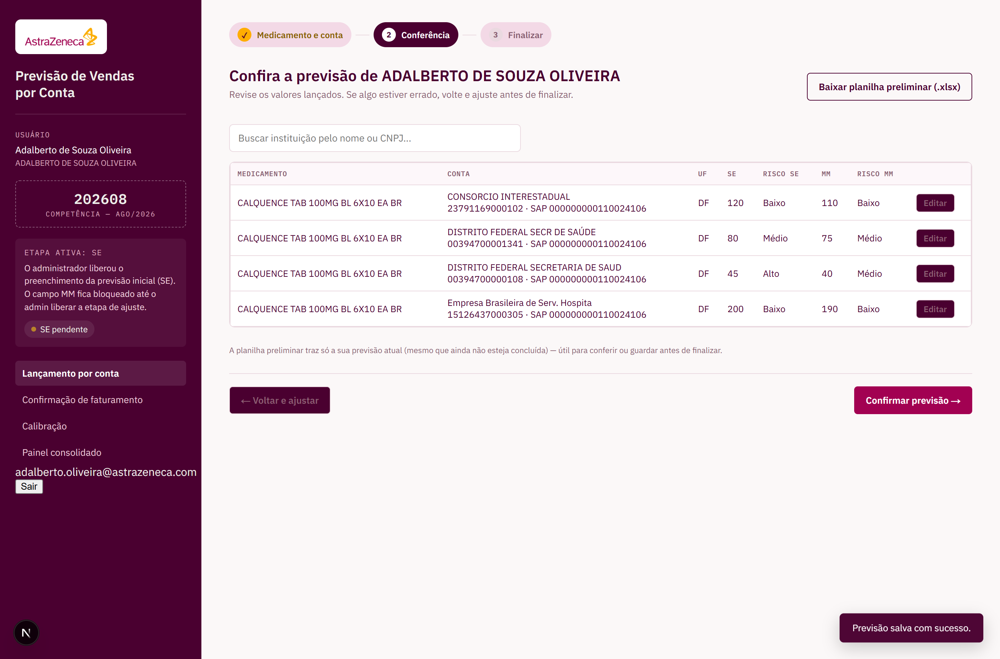
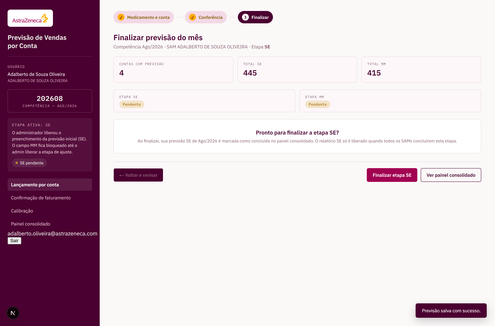
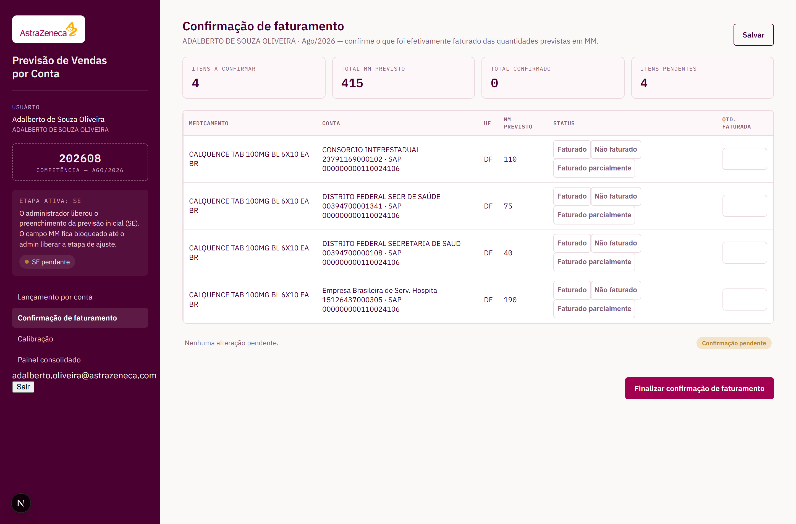
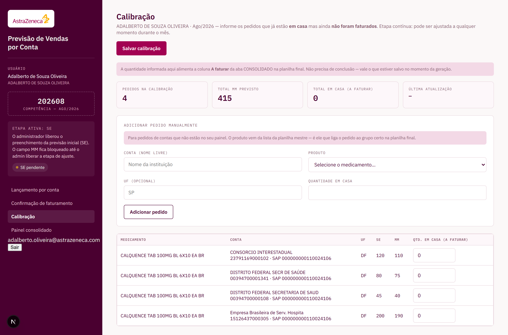
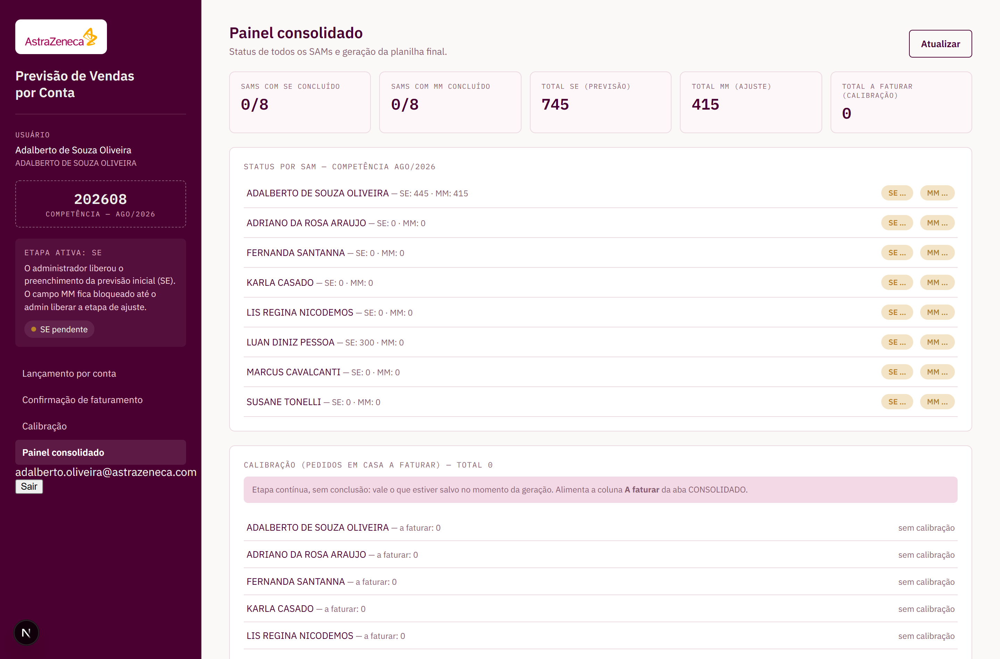

Guia prático para lançar a previsão do mês, confirmar o faturamento e manter
a calibração em dia. Feito para consulta rápida — cada etapa tem o passo a
passo e a tela correspondente.
Em uma frase:
todo mês você informa quanto pretende vender (SE), ajusta esse número (MM),
confirma o que foi efetivamente faturado e mantém atualizado o que já está
em casa mas ainda não foi faturado (calibração).
Documento de apoio ao usuário · Versão 1.0
Sumário
Primeiro acessoEntrar no sistema e definir a sua senha
Os termos que você vai verSE, MM, Faturado, A faturar, competência e risco
Lançar a previsãoEscolher o medicamento, a conta e informar a quantidade
Conferir antes de finalizarRevisar tudo o que foi lançado em uma tabela só
Finalizar a etapaMarcar sua previsão como concluída
Confirmação de faturamentoInformar o que realmente foi faturado
CalibraçãoPedidos em casa que ainda não foram faturados
Painel consolidado e planilha préviaAcompanhar o time e baixar a prévia
Perguntas frequentesAs dúvidas mais comuns, respondidas
Onde eu encontro cada coisa?
O menu fica sempre à esquerda, com quatro opções: Lançamento por conta,
Confirmação de faturamento, Calibração e Painel consolidado.
Você pode ir e voltar entre elas quando quiser.
1
Primeiro acesso
O acesso é individual e usa o seu e-mail corporativo. Não existe cadastro
aberto: a sua conta é criada por um administrador, que te envia uma
senha provisória.
Abra o endereço do dashboard no navegador.
Informe o seu e-mail @astrazeneca.com e a senha provisória que você recebeu.
Clique em Entrar.
Na primeira vez, o sistema pede que você defina a sua própria senha. Escolha uma senha com pelo menos 8 caracteres e confirme.
Tela de entrada — e-mail corporativo e senha
A senha provisória serve uma vez só
Depois que você definir a sua senha, a provisória deixa de valer. Se esquecer
a senha, peça a um administrador para redefinir — ele gera uma nova provisória
e você escolhe outra no próximo acesso.
Você só vê o que é seu
Ao entrar, o sistema já sabe qual SAM você é. Você não precisa (nem consegue)
escolher outro SAM: as telas abrem direto na sua carteira de contas.
2
Os termos que você vai ver
São poucos termos, e eles se repetem em todas as telas. Vale ler uma vez com calma:
Termo
O que significa
Competência
O mês ao qual a previsão se refere, no formato AAAAMM (ex.: 202608 = agosto de 2026). Quem define o mês aberto é o administrador — você sempre lança no mês que estiver vigente.
SE
Previsão inicial. Quanto você acredita que vai vender daquele produto, para aquela conta, no mês. É o primeiro número que você informa.
MM
Ajuste do meio do mês (por volta do dia 15). É a chance de corrigir a previsão inicial com o que você já sabe de concreto.
Risco
O seu grau de confiança naquele número: Baixo, Médio ou Alto. Risco alto = mais incerteza de que a venda se concretize.
Faturado
O que efetivamente foi faturado. Informado na etapa de Confirmação de faturamento.
A faturar
Pedido que já está em casa (o cliente já colocou) mas ainda não foi faturado. Informado na Calibração.
Etapa ativa
Qual campo está liberado no momento: SE ou MM. Aparece no quadro à esquerda. Quem controla isso é o administrador.
Como as etapas se encaixam no mês
Início do mês — você lança a previsão SE e finaliza.
Por volta do dia 15 — o administrador libera o MM; você ajusta e finaliza de novo.
Ao longo do mês — mantém a Calibração atualizada com o que está em casa.
Quando faturar — registra na Confirmação de faturamento.
Por que o campo MM às vezes fica cinza?
Porque a etapa ativa é SE. O campo MM só abre quando o administrador liberar a
etapa de ajuste. Isso é proposital: evita que a previsão do mês seja alterada
fora da janela combinada.
3
Lançar a previsão
Essa é a tela onde você passa a maior parte do tempo. Ela funciona em três
passos, mostrados nas bolinhas no topo: Medicamento e conta →
Conferência → Finalizar.
No menu à esquerda, clique em Lançamento por conta.
Em Selecione o medicamento, escolha o produto na lista.
Na coluna do meio, clique na conta (instituição) que você quer previsionar. Use o campo de busca para achar pelo nome ou pelo CNPJ.
À direita, digite a Quantidade SE e escolha o Risco.
Clique em Salvar rascunho sempre que quiser guardar o progresso.
Repita para as demais contas e medicamentos.

Lançamento — medicamento à esquerda, contas no meio, quantidade e risco à direita
Detalhes que ajudam
O ponto dourado ao lado da conta indica que já existe previsão lançada ali. Serve para você achar rapidamente o que ainda falta.
Se a mesma conta aparecer duas vezes no mesmo medicamento, olhe o código SAP embaixo do CNPJ: são materiais diferentes (por exemplo, código antigo e código novo), cada um com previsão própria.
O rodapé mostra "Alterações não salvas" quando há algo pendente de gravação.
Salve antes de sair
Trocar de tela sem salvar faz você perder o que digitou desde o último
salvamento. Na dúvida, clique em Salvar rascunho.
4
Conferir antes de finalizar
Depois de lançar, clique em Ir para conferência →. Essa tela
junta tudo o que você preencheu em uma tabela única, para você bater o olho
antes de fechar o mês.

Conferência — todas as linhas lançadas, com SE, MM e os respectivos riscos
Aparecem apenas as contas com previsão lançada (SE ou MM maior que zero). Se faltou alguma, volte e preencha.
Use a busca para localizar uma instituição específica.
O botão Editar ao final de cada linha te leva direto àquela conta para corrigir.
Baixar planilha preliminar gera um Excel só com a sua previsão — útil para conferir com calma ou guardar.
Confira os totais
É mais fácil perceber um erro de digitação (um zero a mais, por exemplo)
olhando a lista completa aqui do que conta por conta na tela anterior.
5
Finalizar a etapa
O último passo mostra um resumo com o total de contas previsionadas e as
somas de SE e MM. É aqui que você marca a sua parte como concluída.

Finalizar — resumo dos totais e situação de cada etapa
Revise os números do resumo.
Clique em Finalizar etapa SE (ou MM, conforme a etapa ativa).
Pronto: no painel consolidado, você aparece como concluído.
Finalizei e preciso mudar. E agora?
Sem problema: clique em Reabrir etapa, faça o ajuste e finalize
de novo. Só lembre de finalizar outra vez — enquanto estiver reaberta, você
consta como pendente.
SE e MM são concluídos separadamente
Finalizar o SE não conclui o MM. Quando o administrador liberar a etapa de
ajuste, você precisa voltar aqui e finalizar o MM também.
6
Confirmação de faturamento
Aqui você informa o que realmente foi faturado daquilo que
tinha sido previsto em MM. A tela lista automaticamente só os itens com MM
maior que zero — é o que precisa de confirmação.

Confirmação de faturamento — status e quantidade por linha
Para cada linha, escolha uma das três opções:
Status
Quando usar
Faturado
Saiu tudo o que estava previsto. O sistema considera a quantidade cheia do MM.
Não faturado
Não saiu nada. Conta como zero.
Faturado parcialmente
Saiu parte. O campo de quantidade abre para você digitar quanto foi.
Escolha o status de cada linha.
Se for parcial, informe a quantidade.
Clique em Salvar.
Ao terminar tudo, clique em Finalizar confirmação de faturamento.
Acompanhe pelos cartões
No topo, Itens pendentes mostra quantas linhas ainda estão sem status,
e Total confirmado soma o que você já registrou.
7
Calibração
A calibração é onde você informa os pedidos que já estão em casa mas
ainda não foram faturados. Diferente das outras, essa etapa fica
aberta o mês inteiro: não tem botão de finalizar, e você pode
ajustar quando quiser.

Calibração — SE e MM à vista, quantidade em casa à direita e o formulário de pedido manual acima
Pedidos das suas contas
A tabela já traz as contas com previsão lançada, mostrando SE e MM para referência.
Preencha a Qtd. em casa (a faturar) de cada linha que tiver pedido colocado.
Clique em Salvar calibração.
Pedido de uma conta que não é sua
Se chegou um pedido de uma instituição que não está no seu painel, use o
formulário Adicionar pedido manualmente:
Digite o nome da conta livremente.
Escolha o produto na lista (é ele que classifica o pedido na planilha final).
Informe a UF (opcional) e a quantidade em casa.
Clique em Adicionar pedido e depois em Salvar calibração.
Para onde vai esse número?
A quantidade informada na calibração alimenta a coluna A faturar
da planilha final. Os pedidos manuais ainda aparecem numa aba própria,
chamada CALIBRAÇÃO, com o seu nome, o produto, a quantidade, a conta e o estado.
Não confunda com o faturamento
Calibração = pedido em casa que ainda não foi faturado.
Confirmação de faturamento = o que já foi faturado. Um pedido normalmente
passa pela calibração primeiro e migra para o faturamento depois.
8
Painel consolidado e planilha prévia
O painel consolidado mostra a situação de todo o time: quem já
concluiu SE, quem concluiu MM, os totais e o andamento da calibração e do
faturamento. Você acessa em modo de leitura — dá para acompanhar, não para editar.

Painel consolidado — situação de cada SAM e geração da planilha prévia
Planilha prévia
O botão Gerar planilha prévia (parcial) baixa um Excel com tudo
o que o time computou até aquele momento. Pode ser gerada quantas vezes
você quiser, a qualquer hora. A planilha vem com cinco abas:
Aba
O que traz
202608
Todos os dados, linha a linha, na mesma ordem da planilha mestre
RESUMO
Totais por medicamento, no geral e por estado
RESUMO POR SAM
O mesmo, separado por SAM
CALIBRAÇÃO
Os pedidos lançados manualmente na calibração
CONSOLIDADO
Visão financeira do trimestre, por produto
E os relatórios oficiais?
Os relatórios SE e MM são gerados pelo administrador, e só depois
que todos os SAMs concluírem a etapa. Se você vir alguém pendente na
lista, é isso que está segurando o fechamento.
9
Perguntas frequentes
Esqueci minha senha. O que faço?
Peça a um administrador para redefinir. Ele gera uma senha provisória nova e, no próximo acesso, você escolhe a sua.
O campo MM está cinza e não deixa digitar. Está com defeito?
Não. Significa que a etapa ativa é SE. O MM abre quando o administrador liberar a etapa de ajuste, normalmente por volta do dia 15.
Posso mudar o mês da previsão?
Não. O mês vigente é definido pelo administrador e vale para todo o time — é o que garante que ninguém previsione o mês errado por engano.
Já finalizei, mas preciso corrigir um número.
Vá até a etapa Finalizar e clique em Reabrir etapa. Corrija e finalize novamente — sem finalizar de novo, você segue como pendente.
Não encontro uma conta na lista.
A lista mostra apenas as contas da sua carteira para o medicamento selecionado. Confirme se o medicamento certo está escolhido. Se a conta realmente não existir na base, fale com o administrador — ele atualiza a planilha mestre.
A mesma instituição aparece duas vezes. Qual eu preencho?
As duas, se houver pedido nas duas. Repare no código SAP abaixo do CNPJ: são materiais diferentes, cada um com previsão própria.
Qual a diferença entre calibração e confirmação de faturamento?
Calibração é o pedido que está em casa e ainda não foi faturado. Confirmação de faturamento é o que já foi faturado. Normalmente o pedido entra na calibração e depois migra para o faturamento.
Preciso finalizar a calibração?
Não. Ela é contínua e fica aberta o mês inteiro. Vale sempre o que estiver salvo no momento em que a planilha for gerada — por isso é bom mantê-la em dia.
Recebi um pedido de uma conta que não é minha. Onde lanço?
Na calibração, em Adicionar pedido manualmente. Você digita o nome da conta livremente e escolhe o produto na lista.
Posso gerar a planilha final?
Você pode gerar a planilha prévia, com o que o time já computou. Os relatórios oficiais SE e MM são gerados pelo administrador, após todos concluírem a etapa.
Consigo ver ou alterar a previsão de outro SAM?
Ver os totais dele no painel consolidado, sim. Alterar, não — cada SAM só edita a própria carteira.
Perdi o que digitei ao trocar de tela.
O sistema avisa no rodapé quando há alterações não salvas. Clique em Salvar rascunho antes de mudar de tela ou fechar o navegador.
Em caso de dúvida que não esteja aqui, procure o administrador do dashboard.